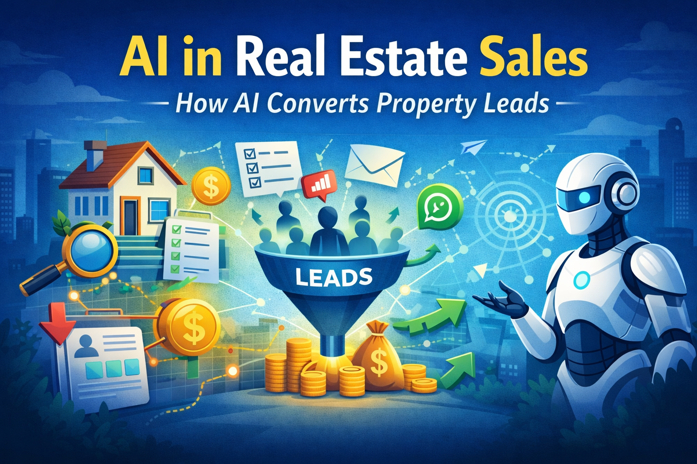

How artificial intelligence is transforming property lead management and sales conversion.

The real estate industry is experiencing a major transformation driven by artificial intelligence. Traditional property sales processes relied heavily on manual follow-ups, phone calls and spreadsheets. Today, AI-powered systems are helping real estate teams automate lead management, improve customer engagement and increase sales conversions.
As property marketing becomes increasingly digital, real estate businesses generate thousands of leads through online advertising, listing portals and social media platforms. Managing these leads efficiently has become one of the biggest challenges for modern sales teams.
One of the biggest problems in real estate sales is delayed response to property inquiries. When a potential buyer fills a form or sends a message, they expect an immediate response.
If a sales team responds too late, the prospect may already be talking to another agent or developer. AI-powered systems solve this problem by ensuring that every lead receives instant engagement.
Not every property inquiry represents a serious buyer. Some prospects may simply be exploring options while others may have budgets that do not match the property inventory.
AI lead qualification systems analyze buyer responses and automatically identify high-intent prospects. This allows sales teams to focus their time on serious buyers instead of spending hours on low-quality leads.
AI voice agents are becoming an important tool in real estate sales automation. These systems can automatically call new leads and ask qualification questions such as budget, location preference and property type.
The information collected during these calls helps sales teams understand which prospects are ready to move forward in the buying process.
Another major advantage of AI systems is automated follow-ups. Most real estate sales teams struggle to maintain consistent communication with every lead.
AI-powered platforms can automatically send follow-up messages, property updates and reminders through messaging platforms like WhatsApp.
This ensures that no potential buyer is ignored and every prospect stays engaged with the sales pipeline.
AI systems also provide valuable insights into sales performance. Real estate teams can analyze data such as lead sources, response rates and conversion patterns.
These insights help businesses improve their marketing strategies and focus on channels that generate high-quality leads.
The role of AI in real estate sales will continue to grow as technology becomes more advanced. Future systems may include predictive analytics, intelligent property recommendations and automated customer journeys.
Real estate businesses that adopt AI early will gain a significant competitive advantage in managing leads and closing deals faster.
SalesSetu is designed to help real estate teams automate their lead management process.
The platform captures leads from advertising campaigns, qualifies prospects using AI voice agents and manages follow-ups through WhatsApp automation.
By automating repetitive sales tasks, SalesSetu allows agents to focus on what matters most — closing property deals.
Learn more about the platform here: SalesSetu